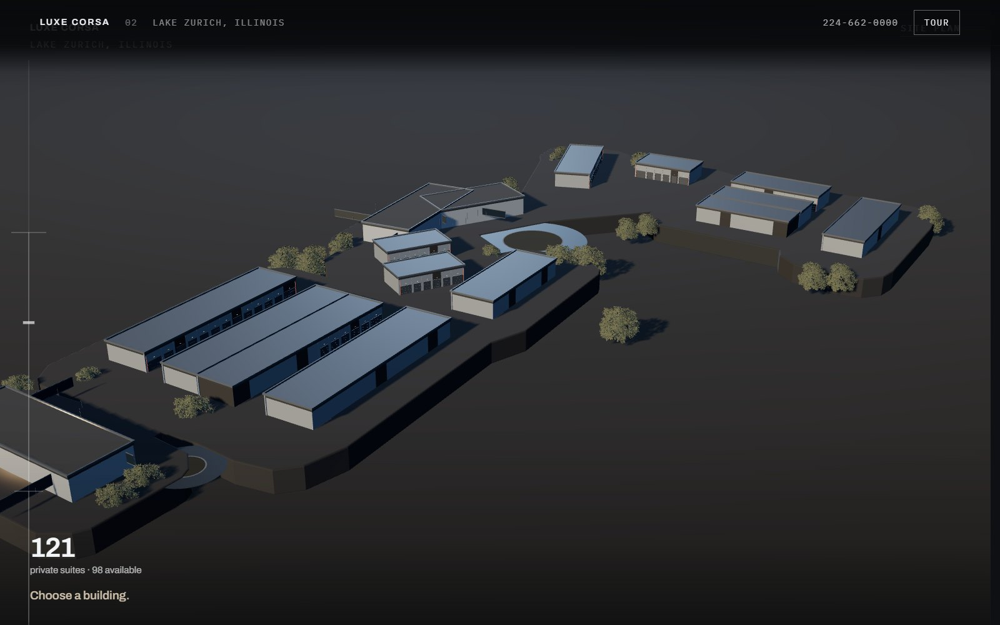
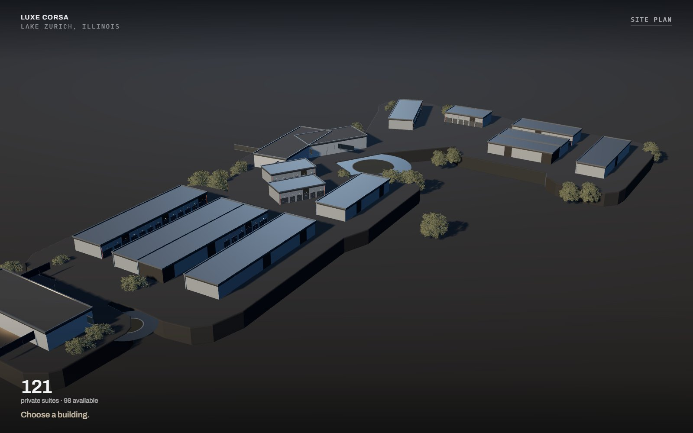
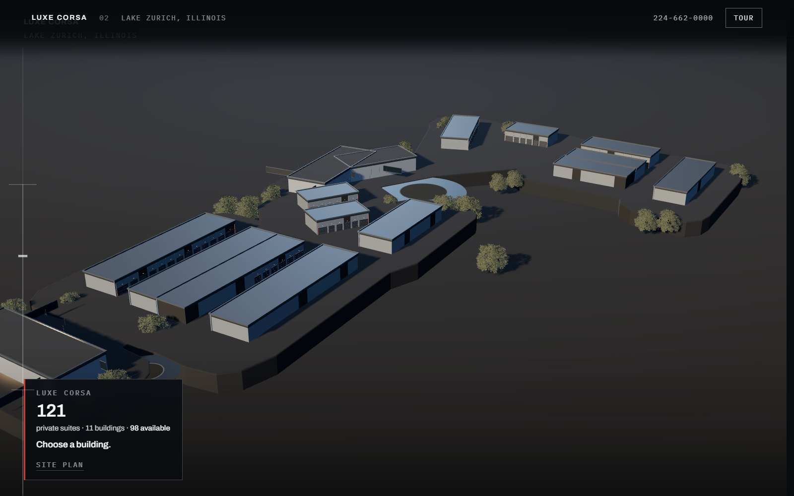
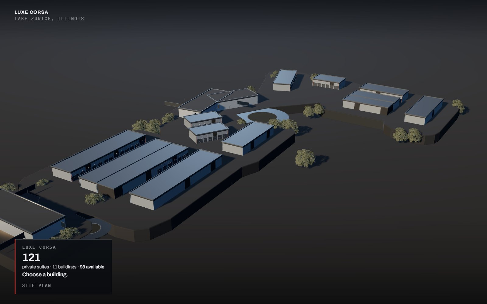
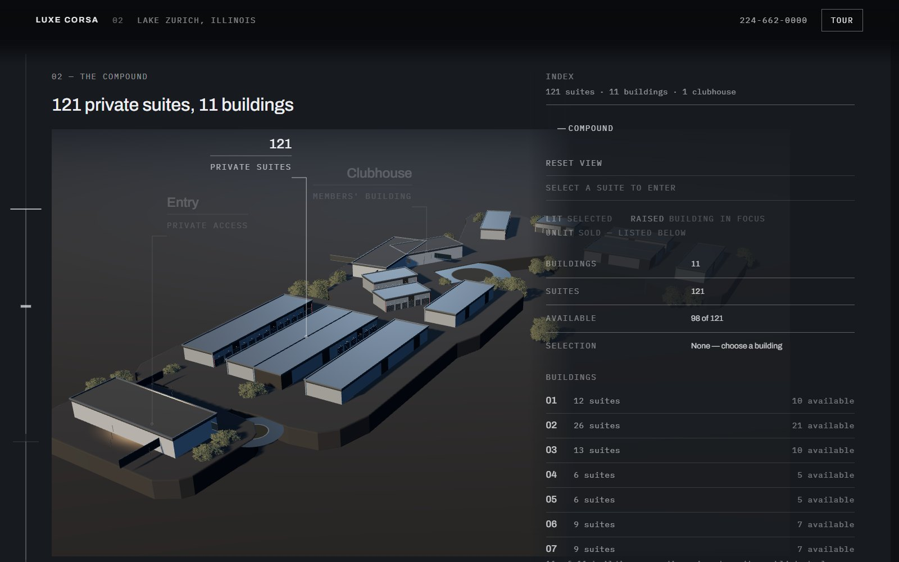

Versions
Luxe Corsa
121 private automotive suites — Lake Zurich, Illinois
An unaffiliated redesign study. Figures verified against luxecorsa.com, read 4 September 2026.

Acts 00-07, architecture as the interface
The full site · V6
The whole homepage with the newest act 02. There is no navigator and no legend: you point at a building on the model and it answers, you point at a real garage door and it tells you the suite, the size and the price, and the panel with ENTER in it only exists once a door has been chosen. The suite you choose is the one act 03 then describes.

The compound, full screen
Act 02 on its own · V6
The same interface with nothing around it. Eleven buildings, 121 doors, and four controls: Overview, Site plan and two chevrons. Everything else is the model.

Acts 00–07 with the V5.3 compound
The full site
The whole homepage, with act 02 replaced by the guided sales interface. Choose one of eleven buildings on the model, then move straight to any other — the navigator is one line across the dock and every building stays clickable, so nothing sends you home to change your mind. Pick a suite and the real door lights up; the price and the size follow.

The compound, full screen
Act 02 on its own
The same interface with nothing around it — the fastest way to judge the switching, the hover language, the suite rail and the site plan without scrolling a page to reach them.

Acts 00–07, production act 02
The site as it stands
The same eight acts with the earlier act 02: an SVG drawing and a record column rather than a model. Kept beside the others because the comparison is the argument.